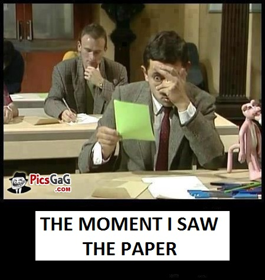

A growing compendium of real events that have happened to me at NTU when interacting with students. Lightly edited. – Nachiket
22nd August 2013
Prof: “Imagine you are describing this problem to
your mother…”
Student: “But my mom has a PhD in
Electrical Engineering and understands this problem better than
me…”
Prof: (explaining saliency computation)
“…in a sea of students sitting in the lab, where are my eyes most likely
to focus…”
Student: “…the female students…”
Student: (via email) “… P.S. Do you happen
to know Dr. Sheldon Cooper from Caltech?”
Student: (via email) “… P.S. Bazinga”
Student: (walks into office) “Is this where
the tea ceremony is going to be?”
18th March 2014
Student Email
Subject “¯(°_o)/¯” Context: I’m throwing up my
hands in despair. My experiment does not work!
31st July 2014
Convocation Day 2014 - student
walks into my office looking for a tie to wear to the ceremony. I don’t
have one so cannot really help him. He seems desperate and lost. Upon
prodding him, he reveals his concern that maybe he won’t get his degree
without a tie?! I now carry a tie in my drawer to spare prospective
graduates any blushes :).
16th January 2015
After a particularly
gruelling MSc final exam for ES6152, my students posted this image on
the class wiki.
